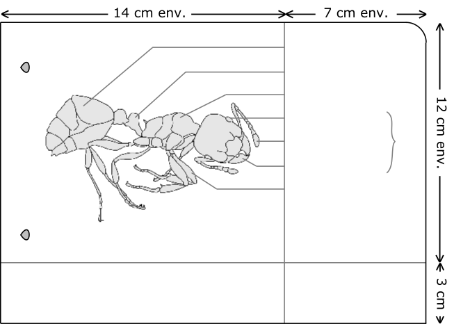

Méthode à suivre Matériel Préparer la feuille Observer avec attention Représenter Tracer des traits adaptés Légender Ajouter un titre Autoévaluation
Exemple de dessin d'observation  abdomen pétiole thorax œil antenne mandibule pattes (6) tête Une fourmi vue aumicroscope (× 40) NOM PrénomClasse